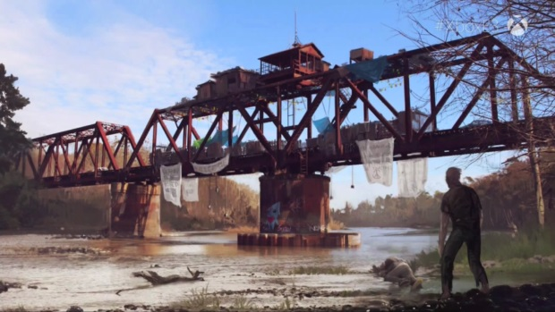

 Dave comes to the end of the path where he reaches a river with the bridge reaching the other side, He see's a speedboat with a damaged engine, and a wooden rowing boat. What should he do? Choice 1: Swim across Choice 2: Approch rowing boat Choice 3: Approach speedboat Choice 4: Cross bridge